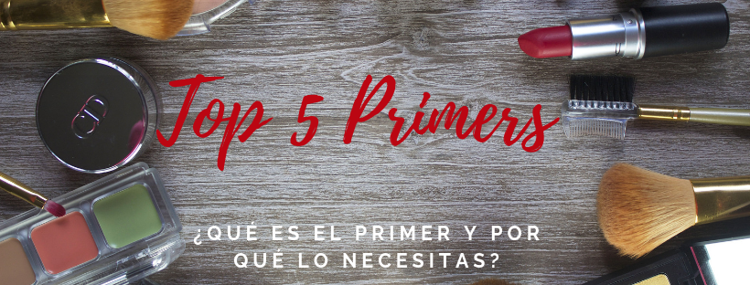
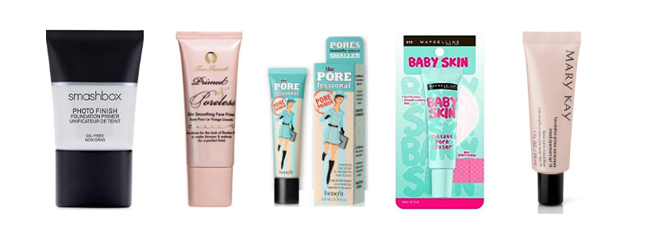
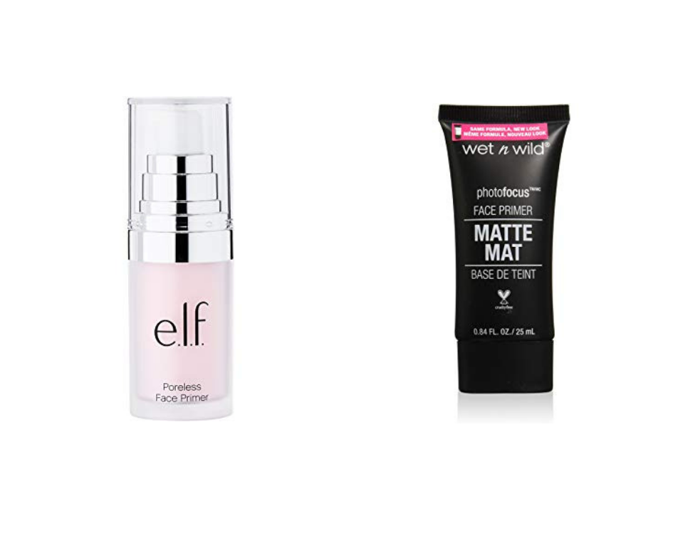

Los primers o prebases de maquillaje se usa antes de la aplicación del maquillaje. es una basa para el maquillaje que da una apariencia mas suave y hará que tu maquillaje dure todo el día. Este puede suavizar, disimular y preparar tu piel antes de aplicar el maquillaje.
Los primers pueden ayudar a suavizar líneas finas, arrugas y poros grandes. Además existen primers específicos para tus parpados para prevenir que las sombras pierdan color y se mantengan todo el día.
Si no has estado usando primer, entonces te has perdido de mucho. Ya sea que hagas un maquillaje completo o algo simple con una BB cream y un bálsamo para labios el uso del primer es indispensable, ya que te ayudara a combatir el brillo excesivo y crear una base lisa para aplicar la base de maquillaje, esto hará que el maquillaje dure por más tiempo.
Los primers están disponibles en distintas presentaciones ya sea en crema, gel o polvo. Varios de los primers tiene una formula a base de silicón lo cual hace que tengan un efecto de ultra suavidad en tu piel, pero si tienes problemas de acné te recomiendo que hagas una pequeña prueba sobre tu piel para ver como reacciona, también puedes preguntarle a tu dermatólogo.
Usando las yemas de tus dedos para aplicar el primer permite que realmente puedas trabajar el producto sobre tu piel, antes de aplicar el primer aplica tu crema humectante una vez que se absorba aplica el primer y después continúa con la aplicación de tu maquillaje como normalmente lo haces.
Top 5

La mezcla sedosa de vitaminas y antioxidantes suavizan y perfeccionan la piel, mientras que la fórmula ayuda a inhibir la destrucción de colágeno y así rellenar los poros y las líneas finas para una acabado libre de imperfecciones.
Primer para maquillaje científicamente formulado para lograr el look de piel impecable sin maquillaje. Úsalo solo o bajo polvos bronceadores y bases. Contiene vitaminas A & C, extracto de mora y una poderosa dosis de retinol que desaparece los poros al tiempo que deja la piel hidratada, firme y libre de toxinas.
Primed & Poreless crea un lienzo perfecto para permitir que los polvos, bronceadores y bases se deslicen imperceptiblemente sobre la piel, brindando un look perfectamente difuminado que se queda en su lugar todo el día. La piel aparecerá más fresca y joven. Ideal para todos los tonos de piel. Su color desnudo se verá invisible una vez aplicado.
Un primer que minimiza la apariencia de los poros. El POREfessional rápidamente minimiza la apariencia de los poros. Aplica este suave y ligero bálsamo para lograr una cobertura de poros translúcida y más suave que una piel suave. ¡Poros! ¡Ahora los ves, ahora no!
La fórmula no grasa contiene vitamina E, conocida por proteger la piel de los radicales libres.
Por la mañana: Aplica una capa delgada de este Pro bálsamo para humectar la piel desde el centro hacia el centro del rostro. Espera unos minutos y aplica el maquillaje como de costumbre o úsalo solo..
-
Maybelline New York Baby Skin Instant Pore Eraser Primer
-
Borrador de poros instantáneo úsalo solo o abajo de tu maquillaje.
- Instantáneamente difumina el aspecto de los poros sin taparlos
- Gel transparente, con suavidad para tu piel
- Sirve para minimizar las lineas de arrugas
-
Sin fragancia
-
Mary Kay Foundation Primer Sunscreen Broad Spectrum SPF 15
Este gel ligero se desliza fácilmente, rellena las imperfecciones y se seca rápidamente con un acabado mate para crear el lienzo perfecto para una aplicación de base de maquillaje impecable que intensifica sus beneficios y prolonga la duración del maquillaje.
- La fórmula sin aceites con SPF 15* está enriquecida con minerales para absorber la grasa y reflejar la luz, y ayuda a reducir la apariencia de las líneas finas, arrugas y poros.
- Adecuado para todo tipo de piel, incluida la piel sensible.
- Sin fragancia, dermatológicamente probado y no comedogénico.
Les dejo 2 primers más con las tres "B's"

E.l.f. Poreless Primer, 0.47 Fluid Ounce
-
Reduce la apariencia de los poros, líneas finas y brillo para obtener un look de aerógrafo
-
Con una infusión de Tea Tree y Vitaminas A y E para retrasar el envejecimiento
- Transforma tu rostro en un lienzo suave y sin imperfecciones
Wet n Wild Coverall Face, Primer Partners in Prime
- Primer para el rostro que ayuda a minimizar la apariencia de los poros, unifica el tono y suaviza la piel
- Cruelty free
- Alta pigmentación
Si les gustó compártanlo en sus redes sociales.
Mis Herramientas de trabajo
Laptop: Acer Aspire R15 Convertible
Cámara: Nikon D5300
Celular: Oneplus 3T